ShotFlow 따라하기
화면마다 실제 캡처에 번호를 붙였습니다. 번호 순서대로 누르면 됩니다. 그림을 누르면 크게 볼 수 있습니다. (2026-10-15 화면 기준)
0. 켜고 끄기
- ShotFlow 폴더의
시작.cmd를 더블클릭합니다. 검은 창이 뜨고 3초 뒤 브라우저에 ShotFlow가 열립니다. - 브라우저가 안 열리면 주소창에
http://127.0.0.1:8710을 입력합니다. - 끌 때는 검은 창을 닫습니다. AI(ComfyUI)를 켰다면 먼저 왼쪽 아래 전원 버튼으로 끕니다.
처음 한 번만 설치.cmd가 필요합니다 (이 PC에는 이미 설치됨). 인터넷에 올라가지 않고 이 컴퓨터 안에서만 돌아갑니다.
상황별 따라하기
| 하고 싶은 일 | 누르는 순서 |
|---|---|
| 새 결과를 보고 승인하기 | 왼쪽 메뉴 영상 이름 → 샷 이름 → 버전 목록에서 새 버전 → 재생해서 확인 → 리뷰 노트에 의견 → 승인 |
| 두 버전 비교하기 | 샷 화면에서 비교할 버전을 고르고 → 승인 버전과 비교 → 좌우 / 와이프 |
| 영상 일부를 AI로 고치기 | 샷 화면 → 고칠 프레임에 멈춤 → 부분 수정 → 칠하기 → 수정 지시 → 후보 만들기 → 버전 목록에 _fix_ 버전 생김 |
| AI로 새 이미지 만들기 | 왼쪽 메뉴 생성 → 레시피 → 샷·원본 → 프롬프트 → 생성 → 결과에서 버전으로 등록 |
| 편집본 다시 만들기 | 샷 목록 아래 편집본 → 이름 적고 복제 → 줄마다 버전·구간·전환 수정 → 조립 실행 → 이전 편집본과 비교 |
| Blender로 구도 잡고 AI 그림 | 3D 연동 → 3D 키프레임 → 장면 → 깊이 이미지 만들기 → AI로 그리기 → 버전으로 등록 |
| 영상에 비 같은 효과 겹치기 | 3D 연동 → 비·효과 레이어 합성 → 장면 → 레이어 렌더 → 샷·진하기 → 합성 만들기 |
| Seedance 영상 기록하기 | 3D 키프레임 4단계 보내기 패키지 만들기 → Higgsfield에서 직접 생성 → 외부 생성 탭에 영상 끌어다 놓기 + 크레딧 → 결과 가져오기 |
| 승인본 전달하기 | 왼쪽 메뉴 납품 패키지 → 이름·대상·영상 → 패키지 만들기 → 경로 복사 |
현황판 (처음 열리는 화면)
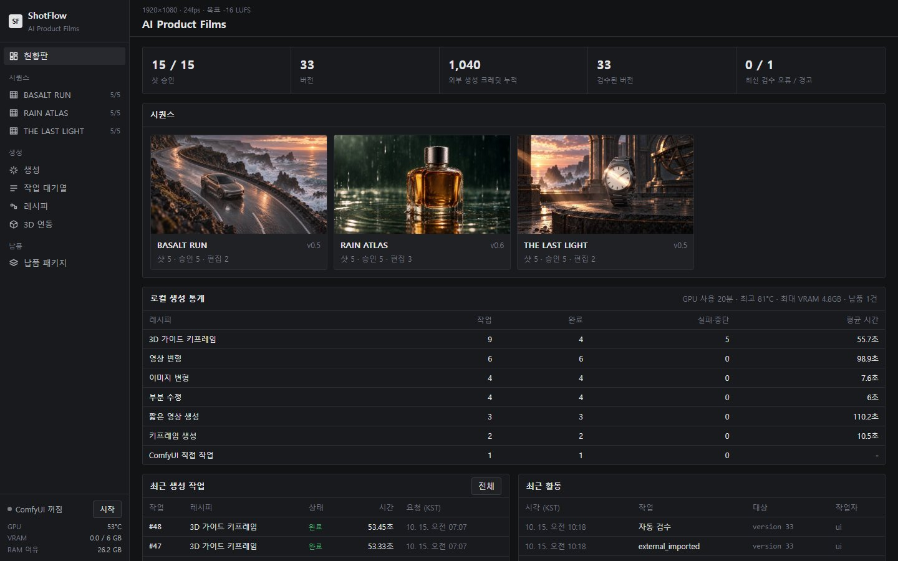
123456- 왼쪽 메뉴의 영상 이름(예: RAIN ATLAS)을 누르면 그 영상의 샷 목록으로 갑니다.
- 가운데 카드를 눌러도 같은 곳으로 갑니다. 카드 아래 "샷 5 · 승인 5"는 5개 샷이 모두 승인됐다는 뜻입니다.
- AI로 몇 번 만들었고, 몇 번 성공했고, 한 번에 몇 초 걸렸는지 보여 줍니다.
- 최근에 돌린 AI 작업 목록. 누르면 그 작업의 자세한 기록으로 갑니다.
- Blender를 쓰는 기능은 여기 "3D 연동"에 모여 있습니다.
- AI 생성 프로그램(ComfyUI) 켜기 버튼. 생성할 때 자동으로 켜지므로 미리 안 눌러도 됩니다. 켜져 있으면 전원 모양 버튼으로 끕니다.
아래쪽 GPU·VRAM·RAM 숫자는 노트북 그래픽카드 온도와 메모리 사용량입니다.
샷 목록 (영상 한 편의 장면들)
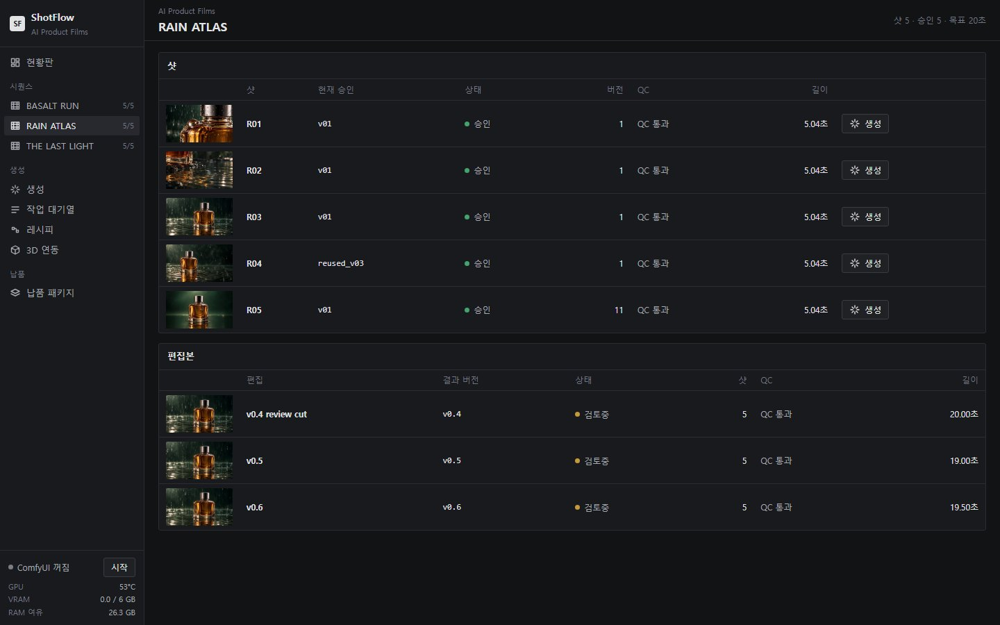
123- 샷 이름을 누르면 그 샷의 상세 화면으로 갑니다 (버전 보기, 승인, 수정).
- "생성"을 누르면 이 샷을 바탕으로 AI 생성 화면이 열립니다.
- 아래 "편집본" 목록에서 v0.6 같은 편집 판을 누르면 편집 화면으로 갑니다.
샷 상세 (버전 보기 · 승인 · 수정)
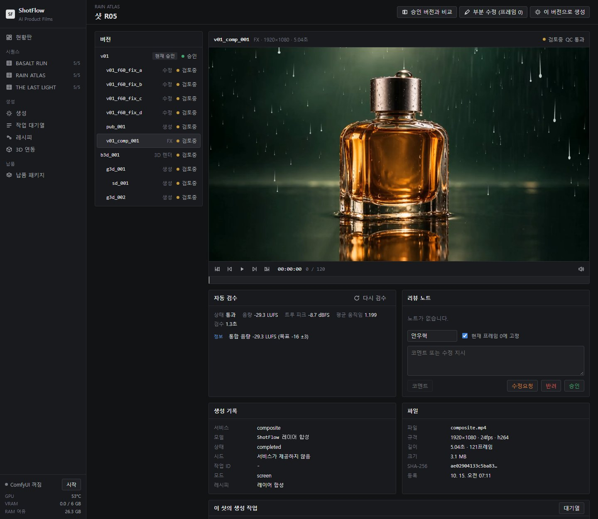
12345678- 버전 목록. 누르면 오른쪽에 그 버전이 나옵니다. 들여쓰기는 "어느 버전에서 나왔는지"(부모-자식)를 뜻합니다. 예: b3d_001 → g3d_001 → sd_001
- 재생 버튼. ◀▶ 버튼으로 한 프레임씩 넘깁니다. 오른쪽 끝 스피커로 소리를 켭니다.
- 지금 보는 버전과 승인된 버전을 나란히 비교하는 리뷰 화면으로 갑니다.
- "부분 수정": 화면의 일부만 칠해서 AI로 고칩니다 (아래 부분 수정 참고). 지금 멈춘 프레임을 고칩니다.
- 이 버전을 원본으로 AI 생성 화면을 엽니다.
- 자동 검수 결과. "통과"면 기계가 찾은 문제가 없다는 뜻입니다. "다시 검수"로 다시 검사합니다.
- 리뷰 노트: 의견을 적고 아래 버튼으로 결정합니다.
- "승인"을 누르면 이 버전이 이 샷의 정식 버전이 됩니다. "수정요청"·"반려"도 같은 자리에 있고, 누가 언제 정했는지 기록됩니다.
아래쪽 "생성 기록"에는 어떤 프로그램·모델·설정으로 만들었는지가, "파일"에는 크기와 해시가 나옵니다.
리뷰 (두 버전 나란히 비교)
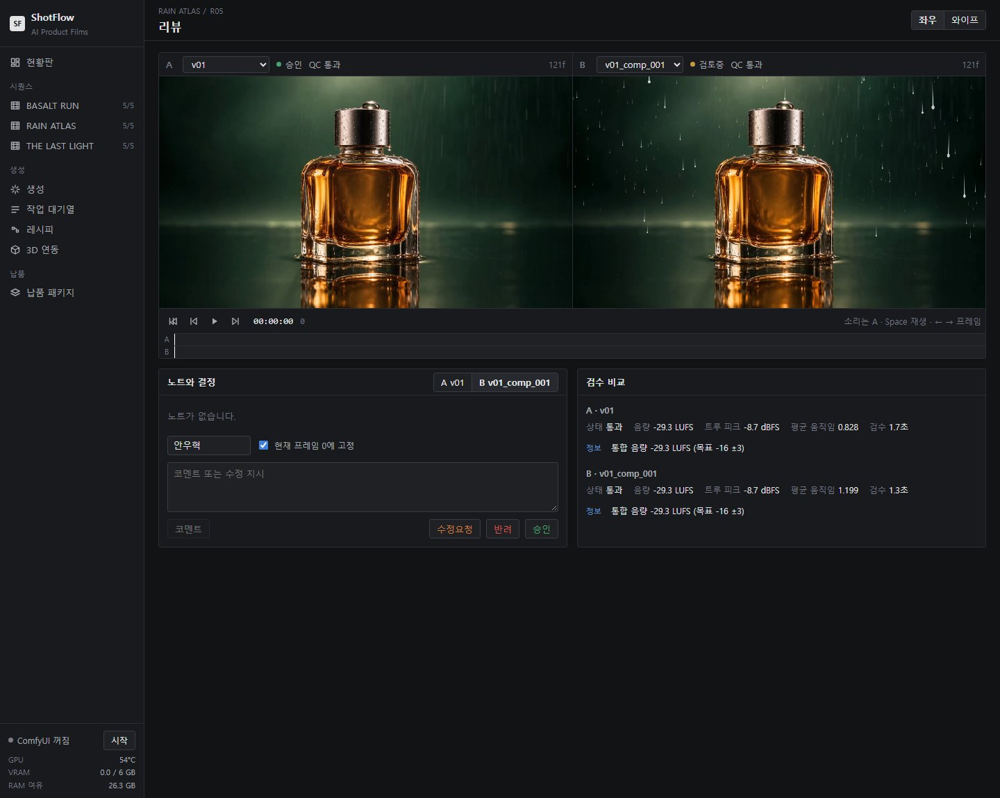
1234567- 왼쪽(A)에 볼 버전을 고릅니다.
- 오른쪽(B)에 볼 버전을 고릅니다.
- "좌우"는 나란히, "와이프"는 한 화면에서 가운데 선을 밀어 가며 비교합니다.
- 두 영상이 같이 재생됩니다. 키보드 Space = 재생/정지, ← → = 한 프레임씩.
- A 또는 B 탭을 고르고 의견을 적습니다.
- 마음에 드는 쪽을 승인합니다.
- 두 버전의 자동 검수 결과를 비교해 보여 줍니다.
편집 (승인된 컷으로 영상 한 편 만들기)
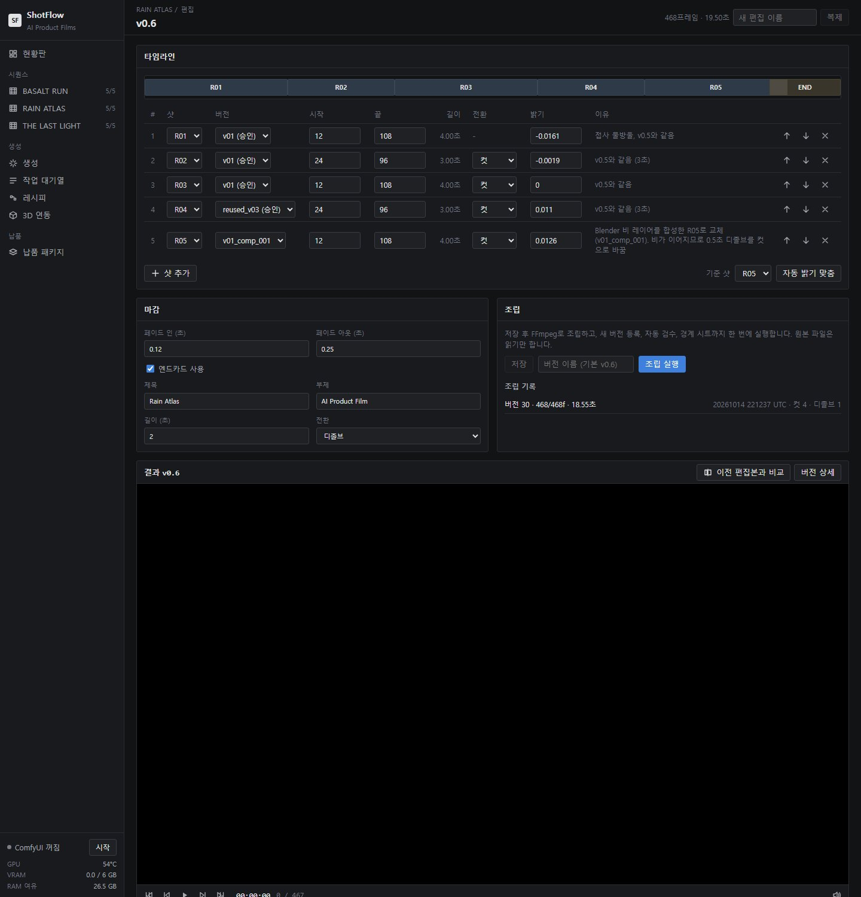
12345679- 위 막대가 영상 순서와 길이입니다. 회색 겹친 부분은 디졸브(서서히 바뀜), END는 마지막 제목 카드입니다.
- 줄마다 샷 · 쓸 버전 · 시작/끝 프레임 · 전환(컷/디졸브) · 밝기 · 바꾼 이유를 고칩니다. 오른쪽 화살표로 순서를 바꾸고 X로 뺍니다.
- 샷을 한 줄 더 넣습니다.
- 고른 기준 샷의 밝기에 다른 샷들을 살짝 맞춥니다.
- 마감: 처음·끝 페이드 길이, 마지막 제목 카드(제목·부제·길이).
- "저장"은 설정만 저장합니다.
- "조립 실행"을 누르면 영상을 새로 만들고, 새 버전 등록·자동 검수·컷 경계 사진까지 한 번에 합니다. 원본은 건드리지 않습니다.
- 방금 만든 편집본을 이전 편집본과 나란히 비교합니다.
- 지금 편집을 복사해 새 이름의 편집(예: v0.7)을 만듭니다. 원래 편집은 그대로 남습니다.
화면 아래에는 결과 영상 플레이어와 컷 경계 비교 사진(앞 컷 끝 ↔ 다음 컷 시작)이 있습니다.
생성 (ComfyUI로 AI 이미지·영상 만들기)
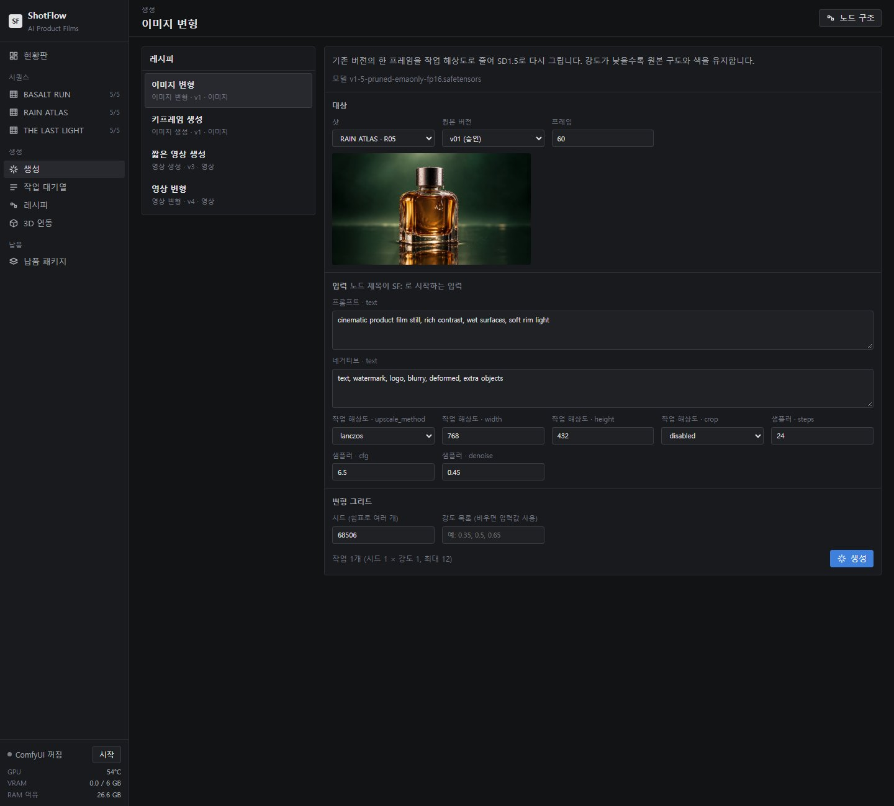
12345- 만들 방식(레시피)을 고릅니다. 이미지 생성, 이미지 변형, 짧은 영상, 영상 변형.
- 결과를 붙일 샷과, 바탕으로 쓸 원본 버전·프레임을 고릅니다.
- 프롬프트(무엇을 그릴지), 네거티브(빼고 싶은 것), 해상도, 강도 등을 적습니다.
- 시드: 숫자를 쉼표로 여러 개 적으면 그만큼 다른 결과가 나옵니다 (최대 12개).
- "생성"을 누르면 아래에 결과가 하나씩 나옵니다. 마음에 드는 결과의 "버전으로 등록"을 누르면 샷의 버전이 됩니다.
ComfyUI가 꺼져 있으면 생성할 때 자동으로 켭니다 (처음 약 30초).
부분 수정 (일부만 칠해서 고치기)
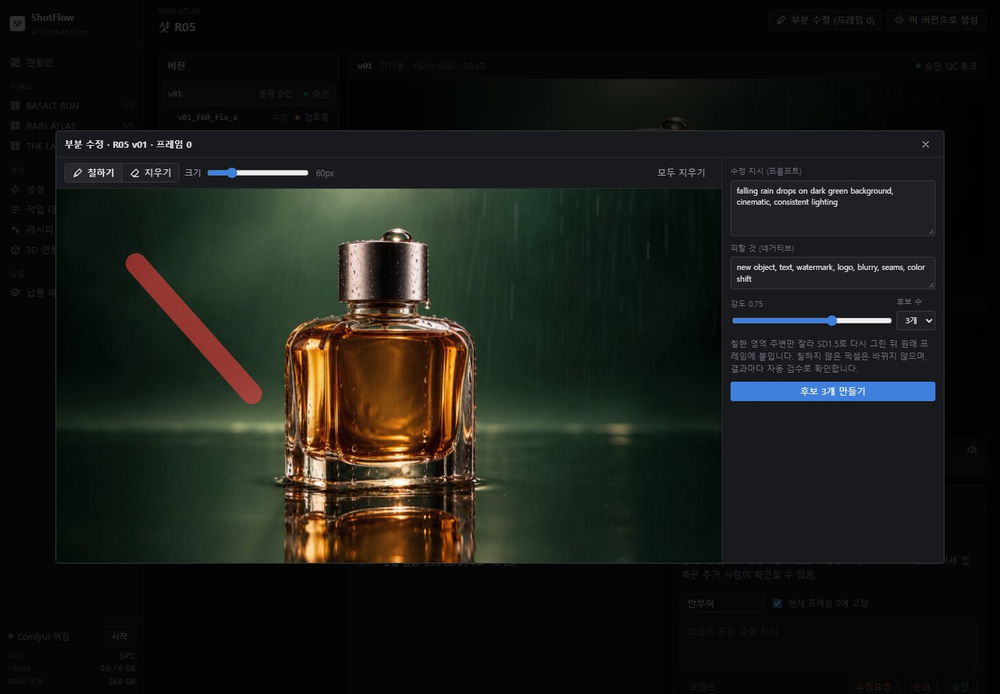
123456- "칠하기"를 고르고 고칠 곳을 마우스로 칠합니다 (빨간 부분).
- 잘못 칠했으면 "지우기"로 지웁니다. 위의 "크기"로 붓 굵기를 바꿉니다.
- 칠한 곳만 바뀌고, 칠하지 않은 곳은 한 픽셀도 바뀌지 않습니다 (자동 검사로 확인).
- 칠한 곳을 무엇으로 바꿀지 영어로 적습니다. 아래 "강도"가 높을수록 많이 바뀝니다.
- "후보 N개 만들기"를 누르면 여러 개를 만들어 자동으로 수정 버전(…_fix_a, _b…)으로 등록합니다.
- X로 닫습니다.
샷 상세 화면에서 영상을 고칠 프레임에 멈춘 뒤 "부분 수정" 버튼을 누르면 이 창이 열립니다.
작업 대기열 (AI 작업 목록)
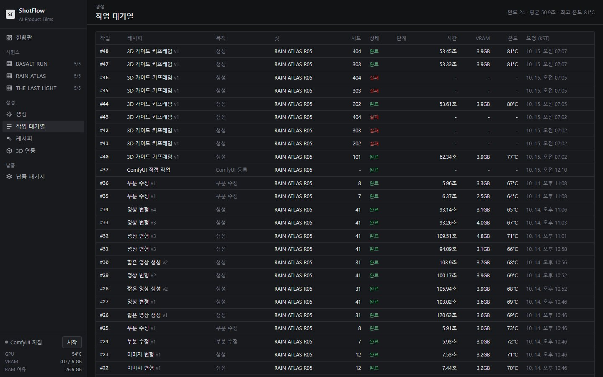
- AI 작업이 순서대로 쌓입니다. 한 번에 하나씩 처리합니다. 줄을 누르면 자세한 기록이 열립니다.
상태: 대기 → 생성 중 → 완료 / 실패 / 취소. 온도가 너무 높아 멈춘 작업은 "실패"에 이유가 적힙니다.
작업 상세 (어떻게 만들었는지)
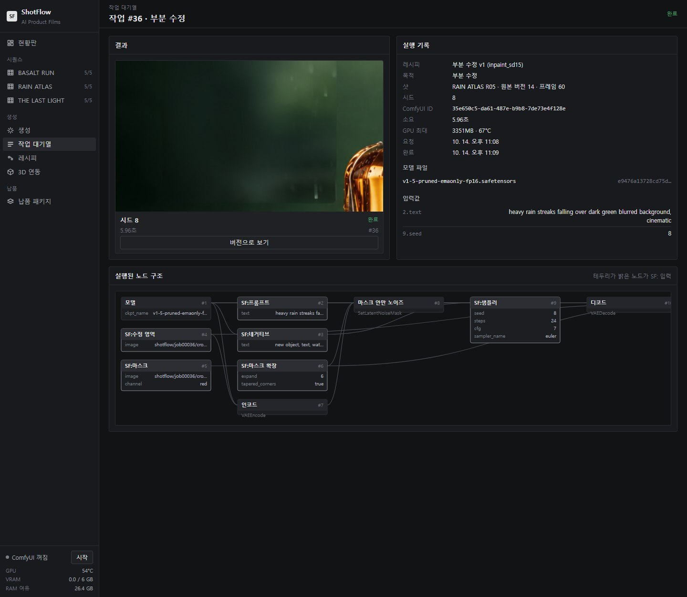
123- 결과물. "버전으로 보기"로 샷 화면으로 갑니다.
- 레시피, 시드, 걸린 시간, GPU 온도·메모리, 모델 파일, 입력값이 모두 남습니다.
- 실제로 실행된 ComfyUI 노드 구조. 밝은 테두리 노드가 화면에서 바꿀 수 있는 입력입니다.
레시피 (AI 작업 방법 목록)
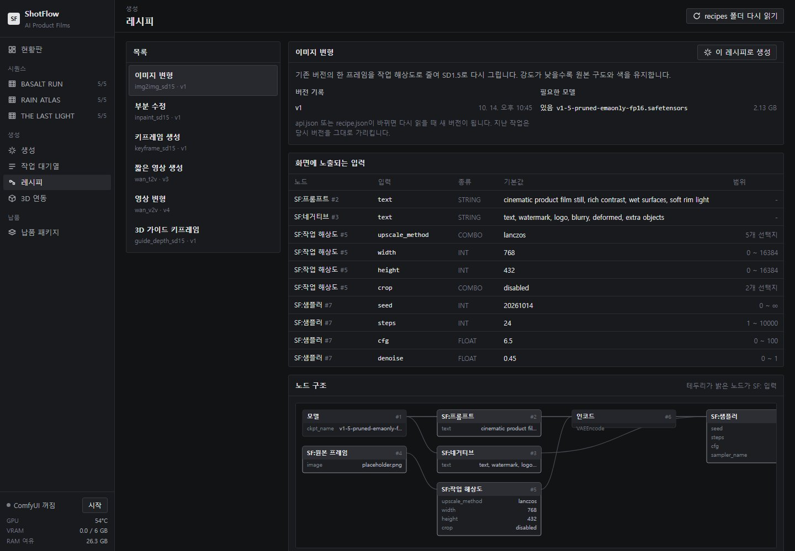
1234- 등록된 레시피 목록. 3D 가이드 키프레임까지 6종입니다.
- recipes 폴더에 새 레시피를 넣었거나 고쳤으면 이 버튼으로 다시 읽습니다. 바뀌면 새 버전이 됩니다.
- 그 레시피의 노드 구조와, 화면에 나오는 입력 목록·필요한 모델이 보입니다.
- 이 레시피로 바로 생성 화면을 엽니다.
납품 (승인본만 골라 전달 폴더 만들기)
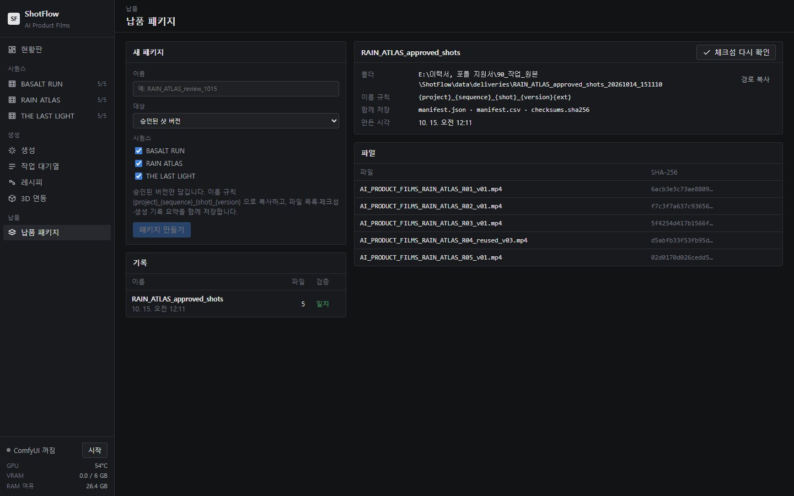
123456- 패키지 이름을 적습니다 (예: RAIN_ATLAS_review_1015).
- 무엇을 담을지: 승인된 샷 버전 또는 승인된 편집본. 아래에서 영상(시퀀스)을 고릅니다.
- "패키지 만들기"를 누르면 승인본만 정해진 이름으로 복사하고, 파일 목록과 체크섬(파일 지문)을 함께 저장합니다.
- 만든 패키지 목록. "일치"는 파일이 처음 그대로라는 뜻입니다.
- "경로 복사" 후 탐색기 주소창에 붙여 넣으면 폴더가 열립니다.
- "체크섬 다시 확인": 파일이 빠지거나 바뀌지 않았는지 다시 검사합니다.
승인되지 않은 버전은 납품되지 않습니다.
3D 연동 ① 3D 키프레임 (Blender로 구도 잡고 AI가 그리기)
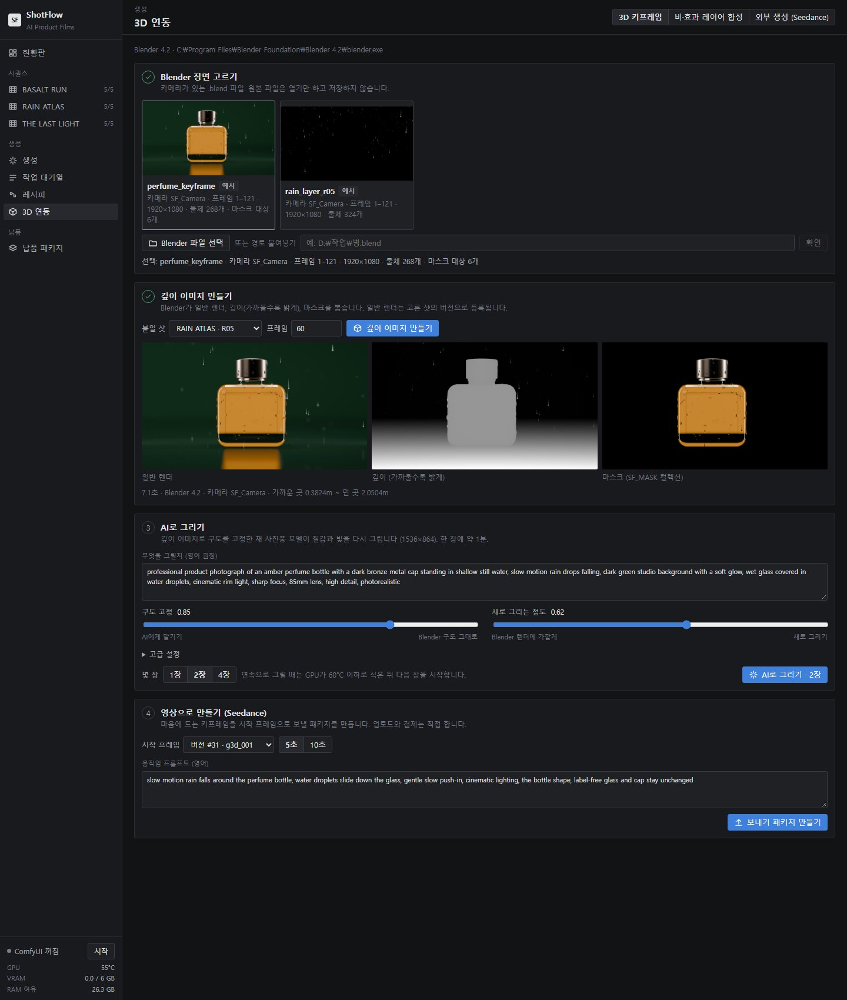
123456789101112- 위의 탭 3개 중 "3D 키프레임".
- 1단계: Blender 장면을 누릅니다. 처음 여는 장면은 10~40초 확인 시간이 걸립니다.
- 내 .blend 파일은 "Blender 파일 선택"으로 고릅니다 (윈도우 파일 창이 열립니다).
- 2단계: 결과를 붙일 샷과 프레임을 고릅니다.
- "깊이 이미지 만들기"를 누르면 일반 렌더·깊이·마스크 3장이 나옵니다. 예전 결과는 옆 목록에서 다시 쓸 수 있습니다.
- 3단계: 무엇을 그릴지 영어로 적습니다.
- "구도 고정": 높을수록 Blender 구도를 그대로 따릅니다.
- "새로 그리는 정도": 낮을수록 Blender 렌더에 가깝고, 높을수록 AI가 새로 그립니다.
- 몇 장 그릴지 고릅니다 (1장 약 1분, 연속이면 GPU가 식는 시간 추가).
- "AI로 그리기". 결과에서 마음에 드는 것의 "버전으로 등록"을 누릅니다.
- 4단계: 등록한 키프레임을 시작 프레임으로 고르고, 길이(5초/10초)와 움직임 프롬프트를 정합니다.
- "보내기 패키지 만들기" → Seedance에 올릴 파일이 준비됩니다 (③ 외부 생성으로 이어짐).
3D 연동 ② 비·효과 레이어 합성 (영상 위에 Blender 효과 겹치기)
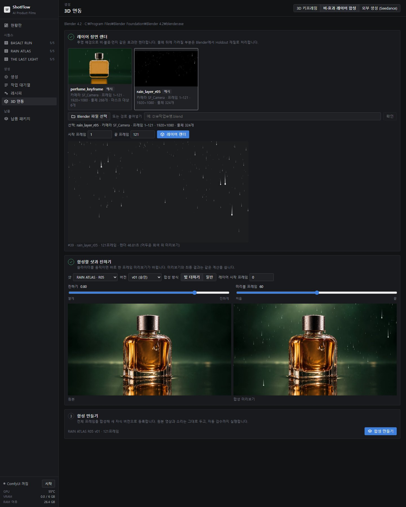
12345678- 1단계: 효과만 있는 Blender 장면(예: rain_layer_r05)을 누릅니다.
- 렌더할 프레임 범위를 정합니다 (샷 길이와 같게).
- "레이어 렌더"를 누르면 투명 배경으로 효과만 렌더하고 미리보기 영상이 나옵니다.
- 2단계: 합성할 샷과 버전을 고릅니다.
- 합성 방식: "빛 더하기"(비·불꽃처럼 밝게만) 또는 "일반".
- "진하기" 슬라이더. 움직이면 바로 아래 미리보기가 바뀝니다.
- 미리 볼 프레임을 옮겨 가며 확인합니다.
- 왼쪽 원본, 오른쪽 합성 미리보기. 최종 결과도 똑같이 나옵니다.
- 3단계: "합성 만들기" → 새 버전(v01_comp_00N)으로 등록되고 자동 검수까지 됩니다. 원본 영상과 소리는 그대로입니다.
3D 연동 ③ 외부 생성 (Seedance 결과 기록)
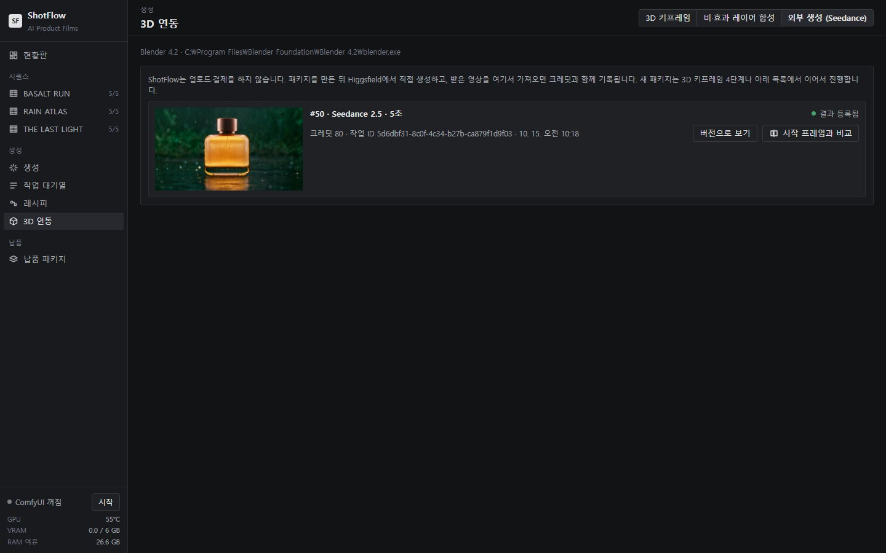
123- 패키지 카드. 결과를 기다리는 동안에는 할 일 3단계, "프롬프트 복사", "폴더 열기", 영상 끌어다 놓는 칸, 크레딧 입력칸이 나옵니다.
- 결과를 가져오면 "버전으로 보기"로 등록된 영상(sd_001)을 봅니다.
- "시작 프레임과 비교"로 시작 이미지와 영상을 나란히 봅니다.
ShotFlow는 업로드·결제를 하지 않습니다. Higgsfield에서 직접 만든 뒤 받은 영상을 끌어다 놓기만 하면 크레딧과 함께 기록됩니다.